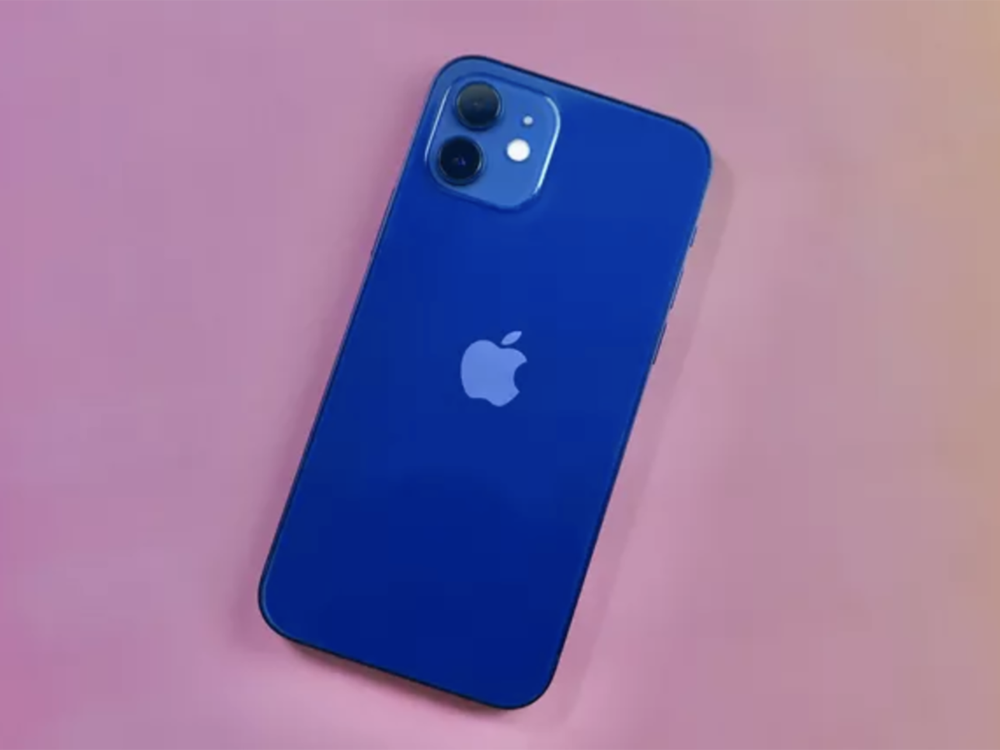
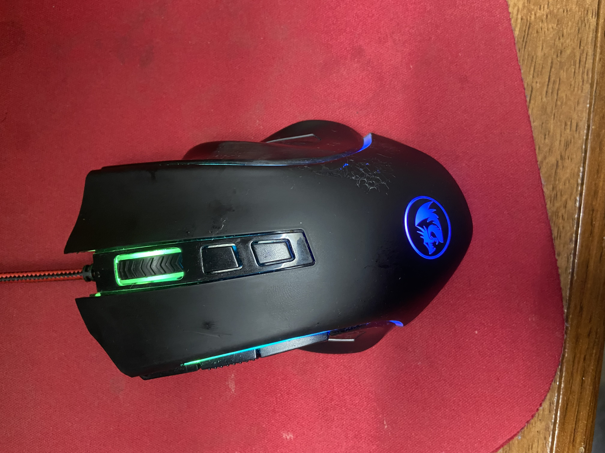
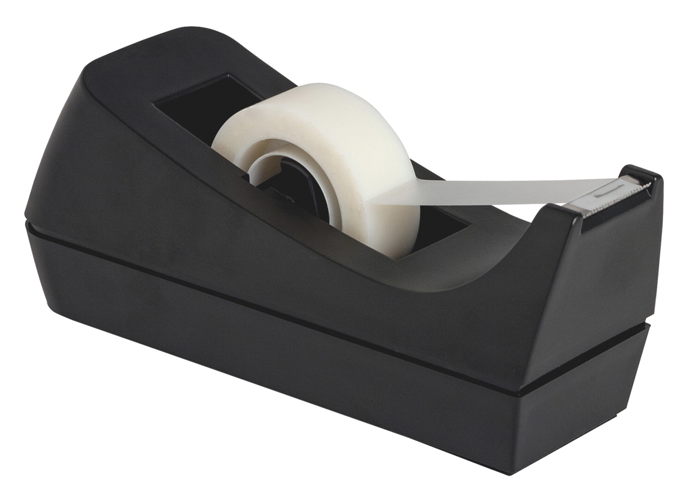

- Test Image - 
-
Test Image -

- Test Image - 
- Test Image -
- Test Image - 
Case Study
Output on Microsoft Azure - "shape"
Output on Mobilenet - "iPod"
Result -
Mobilenet is more accurate
Output on Microsoft Azure - "a close up of a bottle"
Output on Mobilenet - "water jug"
Result -
Microsoft Azure is more accurate
Output on Microsoft Azure - "a computer sitting on top of a table"
Output on Mobilenet - "pay-phone, pay-station"
Result -
Microsoft Azure is more accurate
Output on Microsoft Azure - "chart"
Output on Mobilenet - "cellular telephone, cellular phone, cellphone, cell, mobile phone"
Result -
Microsoft Azure is more accurate
Output on Microsoft Azure - "undefined"
Output on Mobilenet - "cradle"
Result -
Mobilenet is more accurate
I have tested 5 images. Microsoft Azure has predicted 3 of them more accurately, and Mobilenet has predicted 2 of them more accurately. So, according to my Case Study, Microsoft Azure is more accurate.